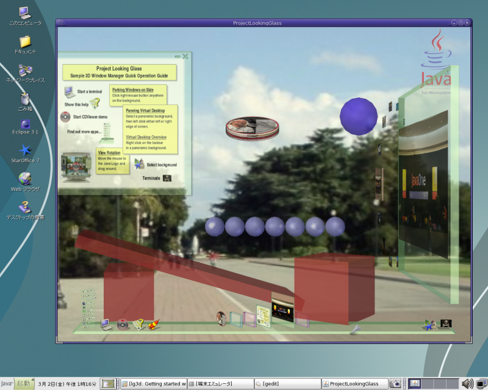

LG3Dをインストールすると
lg3d/bin 内に lg3d-dev, lg3d-app, lg3d-app-full
という 3つのコマンドができます。
これらが LG3D を実行するためのコマンドです。
その他のファイルは無視して構いません。
lg3d-dev, lg3d-app はウィンドウアプリケーションとして
LG3D を実行するためのコマンドです。
開発者用のコマンドと位置づけられています。
lg3d-dev と lg3d-app の違いは X-Windowアプリケーションが実行できるかどうかです。
lg3d-dev は LG3Dアプリケーションのみ実行でき、
lg3d-app は X-Windowアプリケーションの実行も行えます。
lg3d-app-full は lg3d-app のフルスクリーンモード（フレームなし）です。lg3d-app -f を実行するのと同じです。
各環境により利用できるコマンドは異なります。
各環境で利用できるコマンドは次の通りです。
| lg3d-dev | lg3d-app | lg3d-app-full | |
|---|---|---|---|
| Solaris 10 x86 + NVIDIA | ○ | ○ | ○ |
| Linux + NVIDIA | ○ | ○ | ○ |
| Linux + ATI | ○ | ○ | ○ |
| Windows | ○ | × | × |
lg3d-dev, lg3d-app の実行方法は次の通りです。
(インストールしたユーザーのホームディレクトリを /home/duke とします。)
# cd lg3d
# bin/lg3d-dev (もしくは bin/lg3d-app、bin/lg3d-app-full)
|
補足:
Fedora Core 4 などの一部のLinuxディストリビューションの標準状態では lg3d-app コマンドが動かない場合があります。
その場合、/etc/X11/gdm/gdm.conf に DisallowTCP=false を追加し、X-Windowの再起動を行ってください。
下図は Solaris 10 x86 JDS 上で
lg3d-devを実行したものです。

補足:
LG3D のインストールディレクトリにある etc/lg3d/displayconfig/j3d1x1 ファイル (ここでは/home/duke/lg3d/etc/lg3d/displayconfig/j3d1x1 ) ファイルの設定を変更することにより LG3Dウィンドウの大きさを変更できます。
下の例では画面サイズを 1152x864 に設定しています。 画面サイズの代わりに NoBorderFullScreen と指定すればフルスクリーン表示も可能です。これはlg3d-app-fullを実行するのと同じです
変更箇所を赤(太字)で示します。